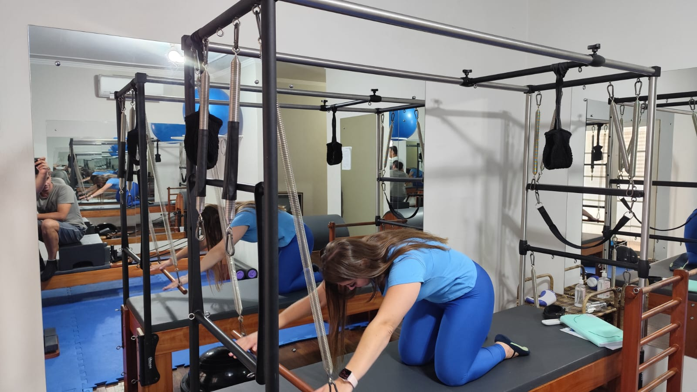

Benefícios da Sala de Massoterapia e Reposição Postural Global (RPG)
As salas de massoterapia e Reposição Postural Global (RPG) oferecem um ambiente ideal para tratamentos especializados que visam o bem-estar físico e mental. Aqui estão alguns dos principais benefícios:
Ambiente Tranquilo: As salas são projetadas para serem calmas e relaxantes, promovendo um estado de relaxamento profundo desde o momento em que o cliente entra.
Privacidade: Garantem um espaço privado onde os clientes podem se sentir à vontade para receber tratamento sem interrupções ou distrações.
Atendimento Personalizado: Permitem que os terapeutas ofereçam um atendimento adaptado às necessidades específicas de cada cliente, seja através da massoterapia ou do RPG.
Alívio de Tensão e Estresse: O ambiente e as técnicas utilizadas ajudam a reduzir significativamente a tensão muscular e o estresse, promovendo uma sensação de bem-estar.
Correção Postural: A Reposição Postural Global (RPG) é especialmente eficaz na correção de desvios posturais, ajudando a melhorar a postura e reduzir dores crônicas.
Melhora da Circulação: As técnicas de massoterapia estimulam a circulação sanguínea, o que pode acelerar a recuperação muscular e melhorar a saúde geral.
Flexibilidade e Mobilidade: Tanto a massoterapia quanto o RPG podem melhorar a flexibilidade e a mobilidade das articulações, proporcionando maior liberdade de movimento.
Bem-Estar Geral: Combinando técnicas de relaxamento e correção postural, os clientes experimentam uma melhora significativa no bem-estar físico e mental.
Prevenção de Lesões: A massoterapia regular e o RPG podem ajudar a prevenir lesões ao manter os músculos e articulações em boas condições.
Profissionais Qualificados: Salas especializadas garantem que o atendimento seja realizado por profissionais altamente qualificados, proporcionando segurança e eficácia nos tratamentos.
Esses benefícios tornam as salas de massoterapia e RPG uma excelente escolha para quem busca melhorar a saúde física e mental de maneira holística e eficiente.

Descrição detalhada da imagem de Massoterapia e Estética